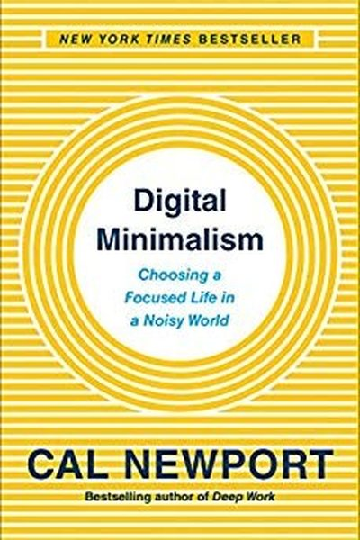

Library › Productivity
Digital Minimalism — Summary & Key Lessons

Choosing a focused life in a noisy world — the philosophy that tech is a tool, not a lifestyle.
📖 OPEN THE FULL INTERACTIVE BREAKDOWN →🌐 Read it in Hindi, Hinglish, Gujarati, Tamil & 22 more languages — free, with audio.
💡 The Big Idea
Cal Newport applies minimalism to technology: digital minimalism is the philosophy that technology should serve your values, not the reverse. The method: a 30-day digital declutter — remove all optional tech, rediscover what you actually value, then reintroduce only the tools that genuinely serve those values. The payoff: solitude returns, conversation deepens, and leisure stops being a consumption stream.
🧠 The 5 Key Lessons
Lesson 1: The Digital Declutter: 30 Days That Reset Your Relationship
The Digital Declutter
Newport's core practice: take 30 days where you stop all optional technology — social apps, news feeds, games, streaming on demand. During the month, rediscover the activities you genuinely value. At the end, reintroduce only the tools that pass the test: 'Does this serve something I truly value?' Everything else stays gone.
📖 Example: Newport's students who completed the declutter report dramatic changes: deeper reading, real hobbies revived, better conversations. The 30-day break breaks the habit loop that makes you reach for the phone without thinking. Read the full example →
⚡ Do this: Declare your own 30-day declutter starting Monday: keep only essential tools (maps, messages, calendar). Everything optional goes into a folder — not deleted — for a month.
Lesson 2: Solitude Deprivation: The Silent Epidemic
Solitude
Solitude — being alone with your own thoughts, no input from other minds — is essential for identity, creativity and emotional regulation. Smartphones have nearly eliminated it: any idle second gets filled with someone else's thoughts. Without solitude, you don't know what YOU think.
📖 Example: Newport's examples: the daily commute used to be solitude; now it's a feed. Waiting in line, walking, sitting in a café — all colonized. People who restore even one phone-free walk a day report their own thinking returning. Read the full example →
⚡ Do this: Create one daily solitude pocket: a walk, commute or shower with NO input — no music, no podcasts, no scrolling. Just your thoughts.
Lesson 3: Conversation Is the Killer App
Conversation
Deep, real conversation is one of the most reliable happiness sources known — yet it's being replaced by 'connection' through screens, which is shallow by design. Newport's practice: conversation-centric time — calls instead of texts, meetups instead of DMs, phone calls with friends as a deliberate habit.
📖 Example: Newport tells of people who replaced texting with scheduled phone calls with old friends — and found their loneliness dropping more than any app could fix. Read the full example →
⚡ Do this: This week, call ONE person you usually text. Make it a 20-minute real conversation. Notice the difference in how you feel after.
Lesson 4: Leisure as Craft, Not Consumption
Leisure
Passive leisure (watching, scrolling) exhausts and hollows you; active leisure (building, making, playing, moving) restores and builds identity. Newport's rule: leisure should require effort and skill — a hobby you're bad at and improving, a craft, a sport. The phone is the enemy of craft.
📖 Example: Newport's examples: woodworking, learning an instrument, hiking, photography — activities with 'skill-building' at the core. People who replaced two hours of streaming with two hours of craft report dramatically better weeks. Read the full example →
⚡ Do this: Pick one active hobby and schedule it twice this week. It should feel slightly hard — that's the point.
Lesson 5: Attention as a Muscle: Train It or Lose It
Attention
Every notification-free minute you spend on one thing is a rep for your attention muscle. Every swipe is a rep for distraction. Digital minimalism isn't about hating tech — it's about training the attention you need for the life you want.
📖 Example: Newport's own practice: long writing sessions, books, and no smartphone before noon. His attention — and his output — are the product of those daily reps. Read the full example →
⚡ Do this: Start your morning phone-free for the first hour. That one habit trains the muscle before the world's interruptions load it.
✅ 5-Step Action Plan
- Start the 30-day digital declutter on Monday.
- Create one daily solitude pocket — no input.
- Replace one text-conversation with a real call this week.
- Schedule two sessions of an active hobby.
- Make the first hour of your day phone-free.
💬 Best Quotes from Digital Minimalism
- “The tyrants we obey are the technologies we use without thinking.”
- “Solitude is the fuel of the self.”
- “You are not your apps.”
Interactive version: mark lessons as read, listen in your language, share quote cards.